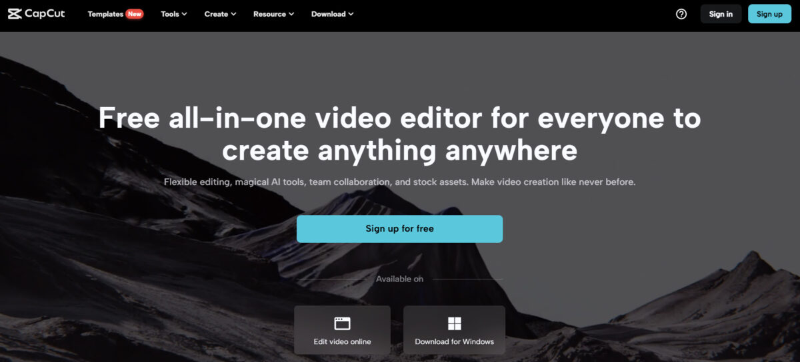
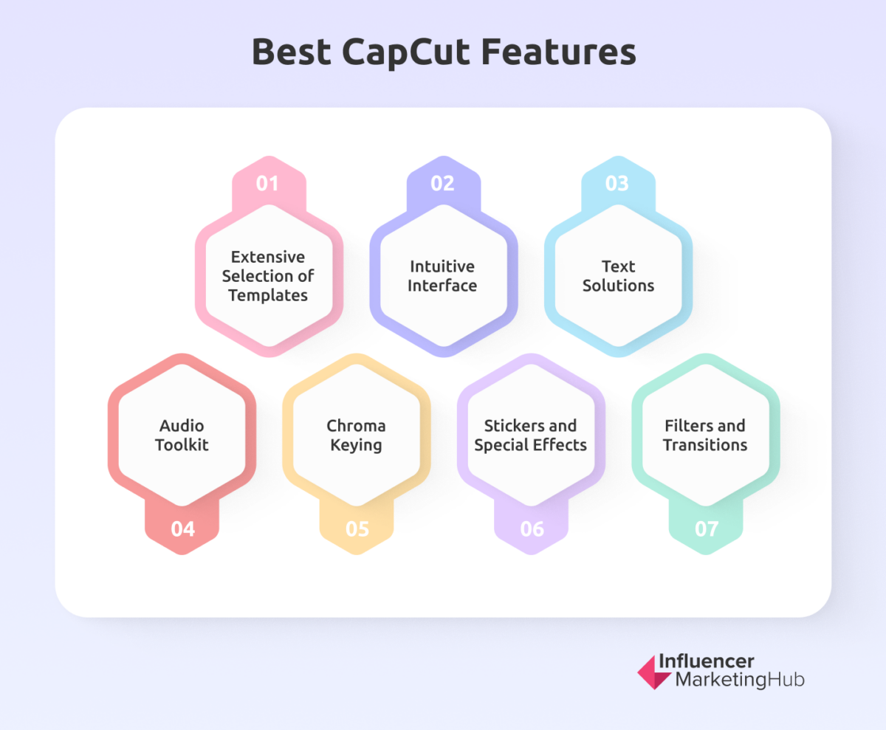
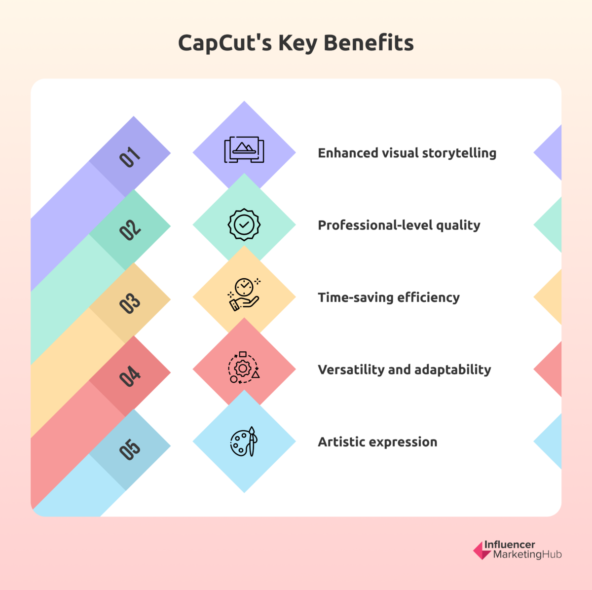

CapCut is a free video editing app that lets users quickly turn their smartphone videos into pro-quality content. Its user-friendly features include cutting, speed adjustments, reversals, music integration, stickers, text, and more. It suits all skill levels and is compatible with online, Windows, and mobile editing. What makes CapCut exceptional is its knack for enhancing videos not just for TikTok, Facebook, and Instagram but also for YouTube, ensuring a polished, professional result.

Features of CapCut

Extensive Selection of Templates: CapCut simplifies video creation with user-friendly templates. Easily insert your clips into these professionally designed templates with color schemes, transitions, animations, and soundtracks. This time-saving feature enhances efficiency.
Intuitive Interface: CapCut offers an intuitive interface that makes video editing straightforward. You can efficiently perform a wide range of tasks, including splitting and merging clips, adjusting video formats, resizing canvases, changing playback speed, and even reversing clips—all accomplished with a few simple taps on its intuitive timeline. Recently, CapCut introduced a valuable feature: the speed curve. Adding speed ramps enables you to create seamless transitions in your videos.
Text Solutions: Text can be incredibly informative, and when added to videos, it can make them truly engaging. CapCut provides a creative service by offering preset templates for text editing. This eliminates the need to navigate numerous complex tabs to adjust font sizes, styles, and bubbles. This streamlines the process, making it more efficient.
Audio Toolkit: CapCut provides a rich music library with exclusive copyrighted songs, but if you prefer your tracks, you can easily import them or extract audio from existing videos. Sound effects are also at your fingertips, made even more accessible with a user-friendly search bar and a favorite button.
Chroma Keying: CapCut enables you to unlock your creative potential with its video background remover tool. Easily extract the main subject or object from your videos, offering endless creative opportunities. After removing the background, you can replace it with a new one or overlay the subject on a separate layer.
Filters and Transitions: These two features play a significant role in setting the mood of your video. While CapCut doesn't offer advanced color grading features, it strikes a balance effectively. CapCut provides a range of predefined filters that you can customize to your liking. Using these filters is a time-efficient alternative to creating your own, speeding up your workflow. You can apply filters to both primary clips and overlays.
How Does CapCut Work?
CapCut offers an accessible and user-friendly alternative to complex AI video editing software.
The CapCut interface comprises four key components: the Preview Window, Timeline, Main Toolbar, and Sub Toolbars. The Preview Window lets you play back videos and interact directly with clips. The timeline is your workspace for arranging and editing video, audio, overlay, effects, and text tracks. The Main Toolbar appears when no clip is selected. Finally, the Sub Toolbars are tailored for different tracks and clips on the timeline.
CapCut automatically saves your project drafts, allowing you to pause and resume editing at your convenience. You can also use the ShortCut feature to create videos with a single click for rapid editing.
What Are The Top Benefits Of Using CapCut?
Using CapCut can be very beneficial, especially if you add it to your marketing strategy toolkit.

Enhanced visual storytelling: Elevate your storytelling with special effects, transitions, filters, and motion graphics to engage your audience with captivating visuals.
Professional-level quality: Achieve professional-quality video editing with precise editing, advanced audio tools, and a comprehensive effects library.
Time-saving efficiency: Streamline your editing process with CapCut's intuitive interface, multi-layer timeline editing, and user-friendly presets.
Versatility and adaptability: Tailor your content for various platforms and formats by customizing text, effects, music, and video backgrounds.
Artistic expression: Explore your creative potential with various tools, effects, and customization options to create standout content.
Conclusion
CapCut is a versatile and user-friendly video editing tool suitable for beginners and those with prior experience. It's free, offers quick access to essential features, and is perfect for enhancing your TikTok content. Not all can hire TikTok marketing agencies to elevate their brands, but CapCut can help you save resources and produce unique, high-quality videos. Whether new to editing or experienced, CapCut is a powerful and fast solution for quickly unleashing your creativity.